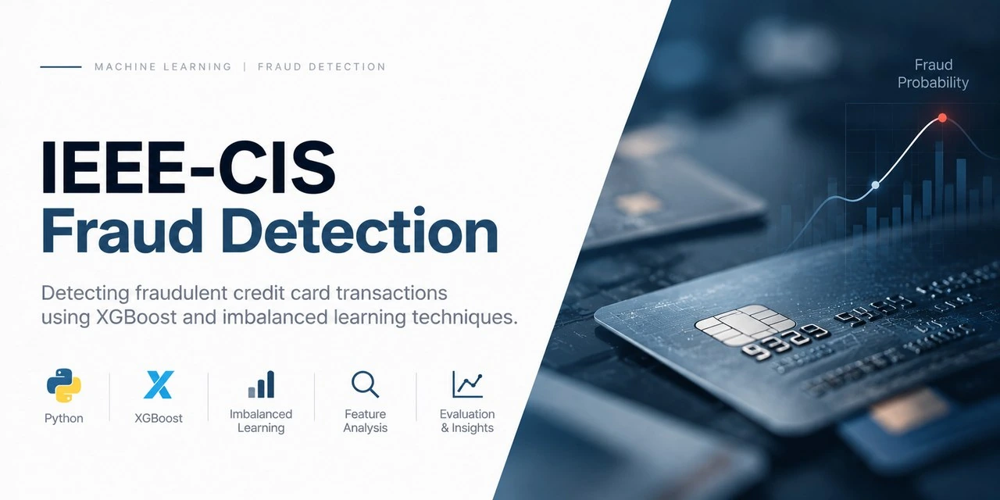

IEEE-CIS Fraud Detection
Can a model help prioritize a limited review queue for rare fraudulent transactions?
Compared fixed Logistic Regression and XGBoost on transaction-only data across chronological training, calibration and final-evaluation partitions.
Decision context: at the same 1,182-alert batch size, precision was 0.870558 for XGBoost and 0.028765 for Logistic Regression on the final temporal holdout.
Retrospective cohort results; not an operating policy or savings estimate.
Evaluation design & limitations
The chronology assigns 354,324 rows to model training, 118,108 to calibration and 118,108 to final evaluation. Full-file label validation occurred before final metrics, so this was not a physically sealed-label experiment.
Anonymized feature timing and label maturation remain uncertain; repeated card attributes are not verified customer IDs. This retrospective result is not entity-disjoint validation, an operational policy, deployed performance or evidence of savings.